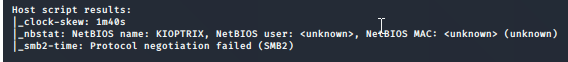

now that we have poerformed enumeration on port 80 and 443
we ll now do on port 139- SMB
eg u access a drive like c drive and ur co-workers can see ur file shared and all
eg u scan something and it appears on your scan foilder in laptop thats SMB
used in work and internal environments
MS17010:the best one hai for exploit
our NMAP results gave us host script results:

this is some sort of enumeration done for us by nmap
SMB2:means shayad running version 2
so look for version information'
we ll try to connect to machine and see if file transfer mai malicious files there or not
we ll run metasploit:exploitation framework hai

thus see its written 1096 auxillary which means thats for scanning and enumeration so it does that too and they are good
post modules do post exploitation say we get shell in a machine we can then do stuff in post
payloads covered later ,also metasploit venom(msfvenom) will be covered later on which willbe used to build payloads out for our own shell
we wrote:search smb
got:

so many results

1st word auxillary tells us the kind of modules na so here its enumeration ke liye
2nd word tells us the action it will take
we are after version information

ye mila na

RHOSTS:means remote hosts-its the victim we are attacking
LHOSTS:means local hosts
if it was RHOST instead means u can import only 1 host
here we have RHOSTS: so can put /24 notation (cidr notation) and try to sweep a range
bt here we 're just attaking 1machine na
domain ,user ,pass of that machne u dont have na so leave that all

we got na samba 2.2.1a
we ll later do exploitation on these all versions
-----------------
now using new tool called smbclient:will try to conect to the file share thats out there
and thus we can see whats going on there
imp link
https://www.reddit.com/r/oscp/comments/fg956k/kali2020_htb_smbclient_protocol_negotiation/

thus we did connect to it na matlab to the file trandsfer
press enter as uu dont know its passwoord

the $ wale arent vlauable to us as they are IPC
bt still the admin wala is imp to us so lets connect ot that

thus its not letting us connect
lets try if IPC$ works or not

so it connenected
typpe help to see options

now lets try ls to list the stuff

so its like a dead end now
hence press exit
so this time we couldnt connect to it
focus on smb in active directory part
now we ll do brief enumeration on ssh